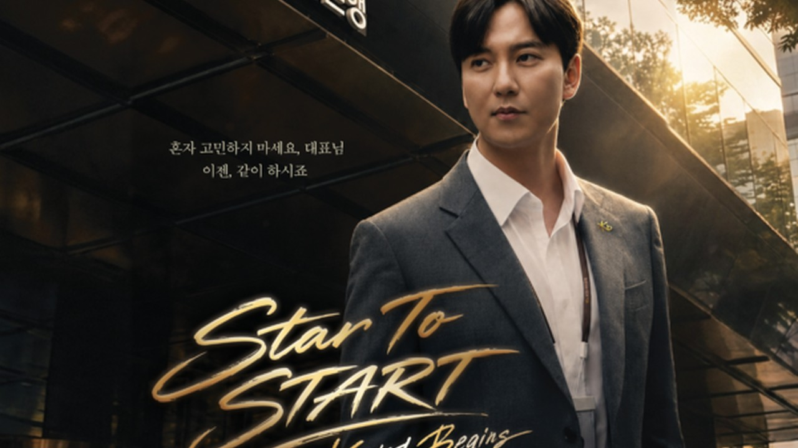
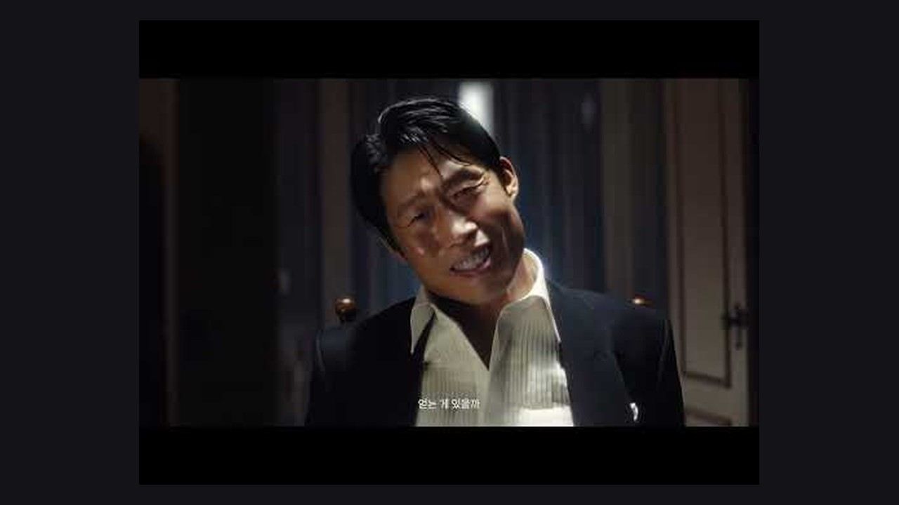
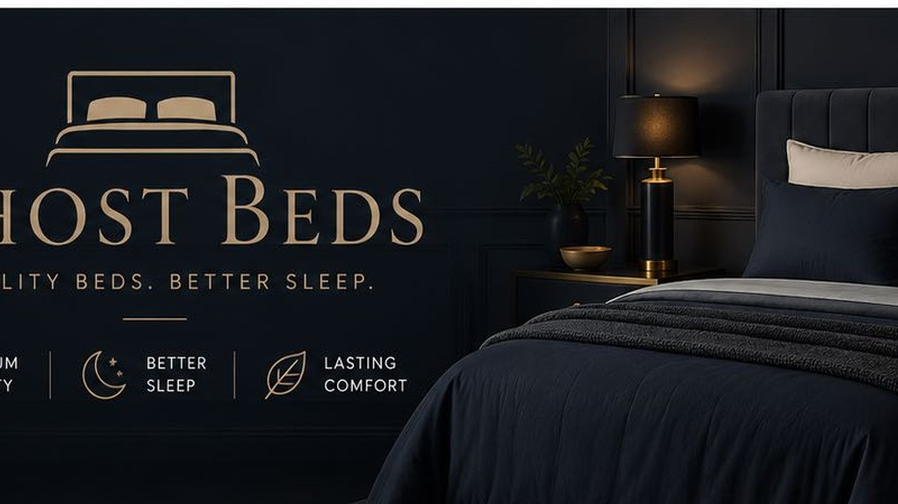
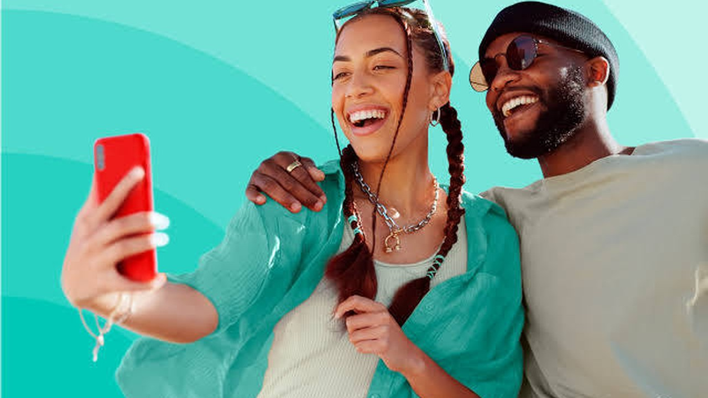
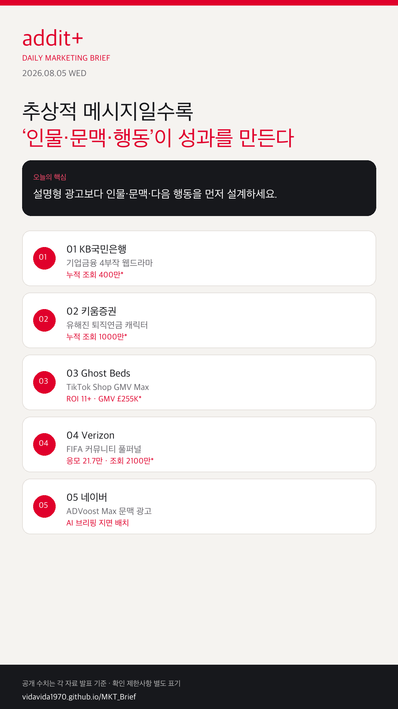

01
검색 광고가 AI 답변 문맥 안으로 들어간다
키워드 매칭보다 탐색 의도와 삽입 위치·문안 품질이 성과를 좌우합니다.
금융·B2B는 시리즈 인물로, 검색 광고는 AI 문맥으로, 이벤트는 거리-응모-매장 경로로, 숏폼 커머스는 소재 테스트와 전환 자동화로 움직입니다.
키워드 매칭보다 탐색 의도와 삽입 위치·문안 품질이 성과를 좌우합니다.
Display·YouTube·Discover·Gmail·Maps를 한 흐름으로 재편합니다.
기능 설명보다 현장 인물과 상태 인격화가 저장·공유를 끌어올립니다.
거리 발견 → 온라인 응모 → 매장 방문 → 크리에이터 증폭이 한 세트입니다.
예쁜 1편보다 후크 변형 테스트와 GMV/CPA 기준 확장이 핵심입니다.

KOREA김남길이 RM 캐릭터로 등장하는 웹드라마로 생산적 금융·수출입 컨설팅 현장을 스토리화했습니다. 공개 후 누적 조회수 400만 회, 좋아요 2.3만·댓글 2.2천·공유 6천 건이 보도됐습니다.

KOREA유해진이 오랫동안 방치된 연금 캐릭터로 등장해 “도대체 언제까지 재우기만 할 거야?”로 무관심을 직설합니다. 누적 조회수 1000만 뷰가 보도됐습니다.

GLOBAL후크·제품 각도·크리에이티브를 지속 테스트하고 오가닉 톤을 유지한 채 유료 전환을 결합했습니다. 공식 사례 기준 ROI 11 이상, CPA £40 미만, 최근 30일 GMV £255.34K입니다.

GLOBAL개최 도시 거리 전단, 국가 단위 스윕스테이크, 매장 이벤트, 크리에이터 확산을 연결했습니다. 응모 21.7만 건, 순방문 78만+, 유료 소셜·크리에이터 조회 2100만, 이벤트 데이 매장 트래픽 +27%가 공개됐습니다.
 KOREA
KOREAAI 브리핑 지면에서 광고 문안과 삽입 위치를 AI가 판단합니다. 광고주센터 오픈 7월 15일, 광고 노출 7월 21일 일정이 공지됐습니다.
Display Ads를 Demand Gen으로 이전하며, GDN 추가 시 ROI 평균 9.5% 증가 사례를 공개했습니다.
Google 공식 발표 →해외 순국 독립유공자 헌정 캠페인으로 최신 공개됐으나 SNS 성과 수치는 공개되지 않아 참고 자료로만 둡니다.
The PR 보도 →
어려운 메시지일수록 기능 나열이 아니라, 인물·문맥·다음 행동을 한 장면으로 설계할 때 저장·공유·전환이 같이 움직입니다.
{kind=link}